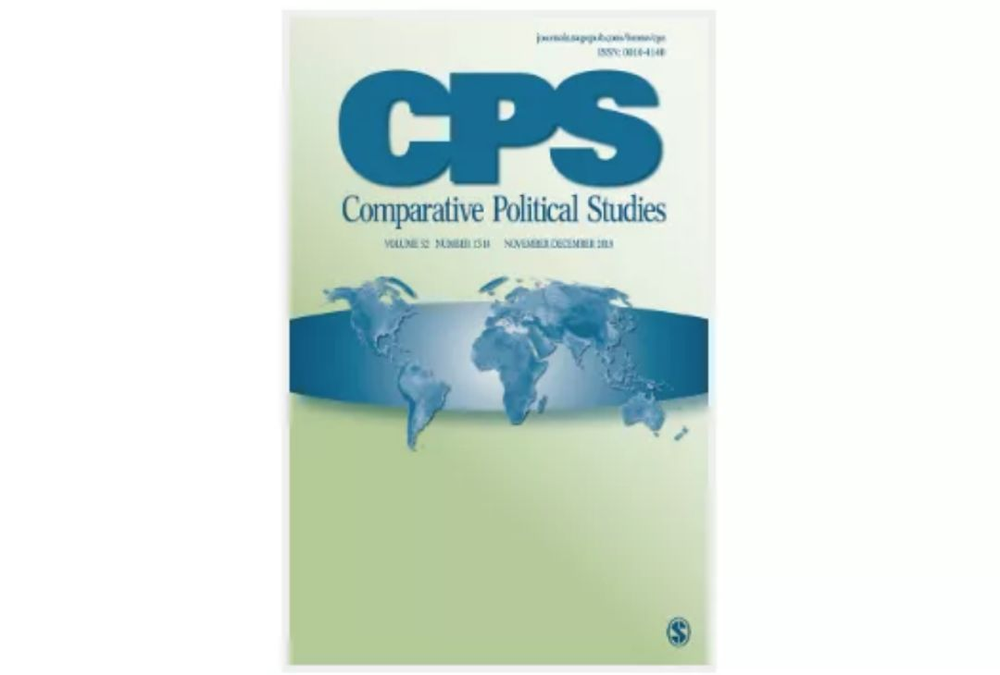

收录于合集
期刊简介： 《比较政治研究》（CPS）杂志一年出版14期，是从事跨国和国内比较政治研究的专业杂志，它致力于在前沿方法、理论和实证研究等领域进行深度分析，其过去5年的影响因子为4.262 在176个政治科学类期刊中排名第12位。
编者按： 政观对英文专业期刊摘要的翻译工作主要由团队中的在读硕士生和博士生自愿组织进行，受学生学识及翻译水平所限，译文可能有诸多不当之处，还望读者们见宥，也欢迎留言讨论。此外，由于版权所限，需要阅读原文的读者请通过所在学校/机构的图书馆数据库或其他途径访问下载。
期刊目录
1. Speechmaking and the Selectorate: Persuasion in Nonpreferential Electoral Systems
2. A Closer Look at the Limits of Consociationalism
3. The Evolution of the Immigration Debate: Evidence from a New Dataset of Party Positions Over the Last Half-Century
4. Addressing Violence Against Women: The Effect of Women’s Police Stations on Police Legitimacy
5. Business Against Markets: Employer Resistance to Collective Bargaining Liberalization During the Eurozone Crisis

1. 公开演讲与推选人团：
非偏向选举制度中的说服
题目： Speechmaking and the Selectorate: Persuasion in Nonpreferential Electoral Systems
作者： Jorge M. Fernandes，里斯本大学社会科学部博士后研究员；Miguel Won，里斯本大学社会科学部助理教授；Bruno Martins，里斯本大学计算科学与工程系教授
摘要： 本文检视了议员会在多大程度上利用立法辩论来从事地方主义活动以迎合非偏向选举制度中推选人团的利益。本文将地方主义活动定义为议员向受地理限制的选区提供有形和无形的利益以利于本身再次当选的行为。本文认为议员的推选人团在地方层面运作时会参考地区的特征来发表更多的演讲，这一该论点也得到了分析结果的有力支持。此外，本文发现地区规模越大则地方主义化的程度越高。本文采用混合研究方法，搜集了葡萄牙议员在6万场辩论中的原始数据集，并结合对精英访谈的定性证据，通过命名实体识别工具对辩论做了分析，本文在代表制和立法研究领域进行了方法上的创新。
This article examines the extent to which legislators use legislative debates to engage in localism activities to cater to the interests of their selectorate in nonpreferential electoral systems. We define localism activities as the delivery of tangible and intangible benefits to a geographically confined constituency that is instrumental to legislators’ re- selection. Our primary argument is that legislators whose selectorate operates at the local level make more speeches with parochial references. Results show strong support for this assertion. Furthermore, we find that high district magnitude leads to higher levels of localism. We use a mixed-methods research design, combining an original data set of 60,000 debates in Portugal with qualitative evidence from elite interviews. We make a methodological innovation in the field of representation and legislative studies by using a Named Entity Recognition tool to analyze the debates.
2. 进一步考察协商民主的不足
题目： A Closer Look at the Limits of Consociationalism
作者： Matthew Charles Wilson，美国南卡罗莱纳大学政治学系助理教授
摘要： 尽管学者们一致认为，种族分裂的社会通常更容易发生政治暴力，但是协商民主的批评者们则提出比例代表制和议会制为种族多元化的环境提供了糟糕的应对方案。作者认为既有的关于权力分享制度对冲突可能性影响的研究假定制度与种族多元化之间呈线性关系，而实际上这种关系更为复杂。作者展示了在种族多元化处于中等水平时，比例代表制和议会制度与增加内战的可能性之间有关联，但在种族更为分裂的环境里，它们却与减少冲突的风险有关，而当种族多元化处于更高水平时，联邦制与更大的冲突风险之间具有独立的相关关系。研究结果强调，制度对和平的促进作用可能取决于社会极化的程度，这就鼓励学者们更认真地思考协商民主在种族多元化程度性更高的地方对于缓解暴力的有效性。
Although scholars agree that ethnically divided societies are generally more prone to political violence, critics of consociationalism suggest that proportional representation and parliamentarism provide poor solutions for ethnically heterogeneous settings. I argue that extant findings about the impacts of powersharing institutions on conflict likelihood assume that institutions have a linear relationship with ethnic diversity, whereas in reality, the relationship is more complex. I demonstrate that proportional representation and parliamentarism are associated with an increased likelihood of civil conflict at mid-range levels of diversity but are associated with a decreased risk of conflict in more extremely divided settings, while federalism is independently associated with greater conflict risk at higher levels of ethnic heterogeneity. The results underscore that the peace- promoting effects of institutions may depend on how polarized societies are, encouraging scholars to think more seriously about the effectiveness of consociationalism for mitigating violence where there is greater ethnic diversity.
3. 移民议题辩论的演变：
来自过去半个世纪以来党派立场新数据集的证据
题目： The Evolution of the Immigration Debate: Evidence from a New Dataset of Party Positions Over the Last Half-Century
作者： Rafaela Dancygier，普林斯顿大学政治学系副教授；Yotam Margalit，特拉维夫大学政治学系教授
摘要： 移民议题是当代民主国家中最具争议的议题之一，但情况并非总是如此。是什么导致了移民议题的这种发展？通过建立、分析一个综合性的新数据集（政党宣言移民数据集，IPM)，作者研究了在过去五十年西欧世界的政治辩论中，移民问题是如何演变的。这个数据集包含了主要政党在选举前的政党宣言中，所有与移民有关的诉求。本文的研究集中在三个核心辩论上。第一，与常识相反，作者并没有发现左右翼在移民问题上极化的证据。相反，数据集记录了左右翼在问题上的联合。第二，作者发现支持“反移民政党的成功极大影响了中心政党在移民问题上的立场”这一论点的证据相当有限。最后，作者的证据反驳了文化问题已经超过移民问题的说法。尽管在某些国家和选举中，与移民相关的文化诉求的重要性有所增加，但经济维度的考量仍普遍存在。
Immigration is one of the most contentious issues across contemporary democracies, but this has not always been the case. What accounts for this development? We study how immigration has evolved in the political debate in Western Europe over five decades by creating and analyzing a comprehensive new data set—Immigration in Party Manifestos (IPM)—of all immigration-related appeals made in preelection manifestos by major parties. Our account focuses on three central debates. First, contra to perceived wisdom, we find no evidence of polarization between left and right. Instead, we document a striking co-movement. Second, we find only modest support for the argument that the success of anti-immigrant parties significantly shapes how centrist parties position themselves on immigration. Finally, our evidence counters the claim that cultural issues have overtaken the debate over immigration. Although the prominence of immigration-related cultural appeals has increased in certain countries and elections, the economic dimension has remained prevalent.
4. 解决针对妇女的暴力：
妇女警局对 警察合法性的影响
题目： Addressing Violence Against Women: The Effect of Women’s Police Stations on Police Legitimacy
作者： Abby Córdova, 肯塔基大学政治学系副教授；Helen Kras, 肯塔基大学政治学系博士研究生、助教
摘要： 通过关注妇女警察局（WPS）应用，作者假设地方警察若能解决针对妇女暴力的问题，会对其制度合法性形成积极的反馈作用。本文建立如下理论：妇女警察局通过强化个人安全感知和政府回应来增加警察在妇女群体中的合法性。作者利用来自巴西100多个城市的市政和民意调查数据检验了这一假设。多层次分析的结果表明，妇女警察局在妇女群体中产生了积极的作用，使得女性对警察的信任超过了男性，同时缩小了对警察效能评估的性别差异。加入工具变量后的分析得到了相似的结果，证明了这一效应并非内生。此外，中介模型的结果显示，妇女警察局在妇女对警察合法性认知中的这一积极影响是由被提高的个人安全感而非政府回应感所驱动的。
With a focus on the implementation of women’s police stations (WPS), we posit that local policies that address violence against women can result in positive feedback effects on institutional legitimacy. We theorize that WPS increase police legitimacy among women by improving perceptions of personal safety and government responsiveness. To test our hypotheses, we rely on municipal and public opinion data from more than 100 municipalities in Brazil. The results of our multilevel analysis indicate that WPS produce positive feedback effects among women, resulting in higher trust in the police among women than men and closing the gender gap in perceptions of police effectiveness. Incorporating an instrumental variable in the analyses yields similar results, suggesting that these effects are not endogenous. Moreover, the results of our mediation models show that WPS’ positive effects on women’s views of police legitimacy are driven by improved perceptions of personal safety, and not perceptions of government responsiveness.
5. 商业对抗市场：
欧元区危机期间雇主 对集体谈判自由化的抵抗
题目： Business Against Markets: Employer Resistance to Collective Bargaining Liberalization During the Eurozone Crisis
作者： Fabio Bulfone，德国马克斯·普朗克（Max Planck）学会社会研究所博士后；Alexandre Afonso，莱顿大学治理和全球事务系副教授
摘要： 雇主组织已经被发现是欧洲劳资关系自由化的有力推动者。相反，本文认为雇主对于劳资关系自由化的倾向是不同的，同时本文证明了西班牙、意大利和葡萄牙三国的雇主组织在欧元区遭受危机时抵制了由国家领导的对集体谈判自由化的改革。这表明在这些国家中，小企业在经济中的决定性地位让雇主组织有选择地支持行业谈判和国家监管的一些部分。对于小企业来说，进行行业谈判的重要性主要有三点：它限制了劳资冲突，减少了关于工资谈判的交易成本，并且确保成员企业不会因竞争对手提供更低的工资和就业条件而受到削弱。此外，国家维持行业谈判以及将其扩展到整个行业是关乎雇主组织生存的问题。本文介绍了雇主反对劳资关系自由化的理由，而这些理由并非被归因为资本主义道路的多样性。
Employer organizations have been presented as strong promoters of the liberalization of industrial relations in Europe. This article, in contrast, argues that the preferences of employers vis-à-vis liberalization are heterogeneous and documents how employer organizations in Spain, Italy, and Portugal have resisted state-led reforms to liberalize collective bargaining during the Euro crisis. It shows that the dominance of small firms in the economies of these countries make employer organizations supportive of selective aspects of sectoral bargaining and state regulation. Encompassing sectoral bargaining is important for small firms for three reasons: it limits industrial conflict, reduces transaction costs related to wage-bargaining, and ensures that member firms are not undercut by rivals offering lower wages and employment conditions. Furthermore, the maintenance of sectoral bargaining and its extension to whole sectors by the state is a matter of survival for employer organizations. The article presents rationales for employer opposition to liberalization that differ from the varieties of capitalism approach.
编译/审校： 施 榕 殷 昊 杨端程 赵德昊 吴温泉 编辑： 康张城
【政文观止Poliview】系头条号签约作者